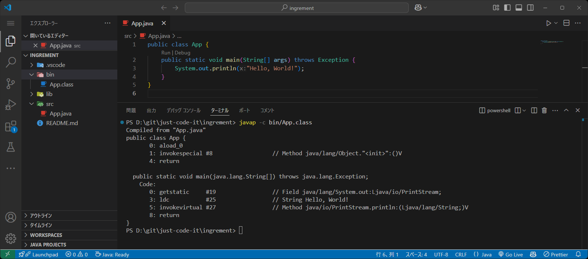

インクリメントの前置・後置を比較した

x++と++xややこしいですよね。
インクリメントの前置・後置の動きを比較
Javaのインクリメントには以下の2種類があります。
++x; // 前置
x++; // 後置
この2種類の動きについて、classファイルをバイトコードに変換して詳しく動きを確認してみます。
前置インクリメントの動き
int x = 0;
int y = ++x;
yの値は1
前置インクリメントを利用した場合はxの値がインクリメント（+1）されてから、yに代入されます。
バイトコードでもこの動きになっていることが確認できます。
バイトコードに変換したもの
Code:
0: iconst_0 // リテラル値「0」をオペランドスタックに積む
1: istore_1 // オペランドスタックから取り出した値をインデックス1の変数 x に格納
2: iinc 1, 1 // x をインクリメント（x = x + 1）
5: iload_1 // インデックス1の変数 x の値をオペランドスタックに積む
6: istore_2 // オペランドスタックから取り出した値をインデックス2の変数 y に格納
7: return
後置インクリメントの動き
int x = 0;
int y = x++;
yの値は0
後置インクリメントを利用した場合はxの値を一時保存したあとにインクリメント（+1）して、一時保存した値がyに代入されます。
バイトコードではxの値をロードした後にインクリメントしていることが確認できます。
バイトコードに変換したもの
Code:
0: iconst_0 // リテラル値「0」をオペランドスタックに積む
1: istore_1 // オペランドスタックから取り出した値をインデックス1の変数 x に格納
2: iload_1 // インデックス1の変数 x の値をオペランドスタックに積む
3: iinc 1, 1 // x をインクリメント（x = x + 1）
6: istore_2 // オペランドスタックから取り出した値をインデックス2の変数 y に格納
7: return
オペランドスタック（Operand Stack）とは？
オペランドスタックとは、JVM（Java Virtual Machine）内で命令の処理に使われる「計算用の一時メモリ領域」 です。
JVM は、オペランドスタックを使って値を一時的に保持し、計算やメソッドの引数・戻り値の処理を行います。
🔹 オペランドスタックの役割
- ローカル変数テーブル（Local Variables Table）とデータをやり取りする
- 計算（加算, 乗算, 比較など）を行う
- メソッドの引数を渡す
- メソッドの戻り値を受け取る
- オペランド（命令の対象となるデータ）を一時的に保持する
🔹 オペランドスタックはスタックフレームの要素
JVM は、メソッドを呼び出すたびに新しいスタックフレーム（Stack Frame）を作成し、各フレームには オペランドスタック（計算用）とローカル変数テーブル（変数用）が含まれます。
スタックフレームの各領域
| 領域 | 説明 |
|---|---|
| ローカル変数テーブル（Local Variables Table） | メソッド内の変数や引数を格納 |
| オペランドスタック（Operand Stack） | 計算やメソッド呼び出し時に使用するデータを一時保存 |
| フレームデータ（Frame Data） | メソッドの戻りアドレス、例外ハンドラ情報など |
📌 オペランドスタックは「計算用の作業領域」として使われる！
バイトコード変換方法
上記のバイトコード表示に使ったのはjavap -cというコマンドです。このコマンドを使うことでclass拡張子のクラスファイルのバイトコードを確認することができます。
javap -c クラス名（拡張子 .class は不要）
javapのみではクラスやメソッドの定義だけが出力され、-cオプションをつけることで処理のコードが出力されます。

まとめ
++x: インクリメントしてからxを利用x++: xを利用してからインクリメント